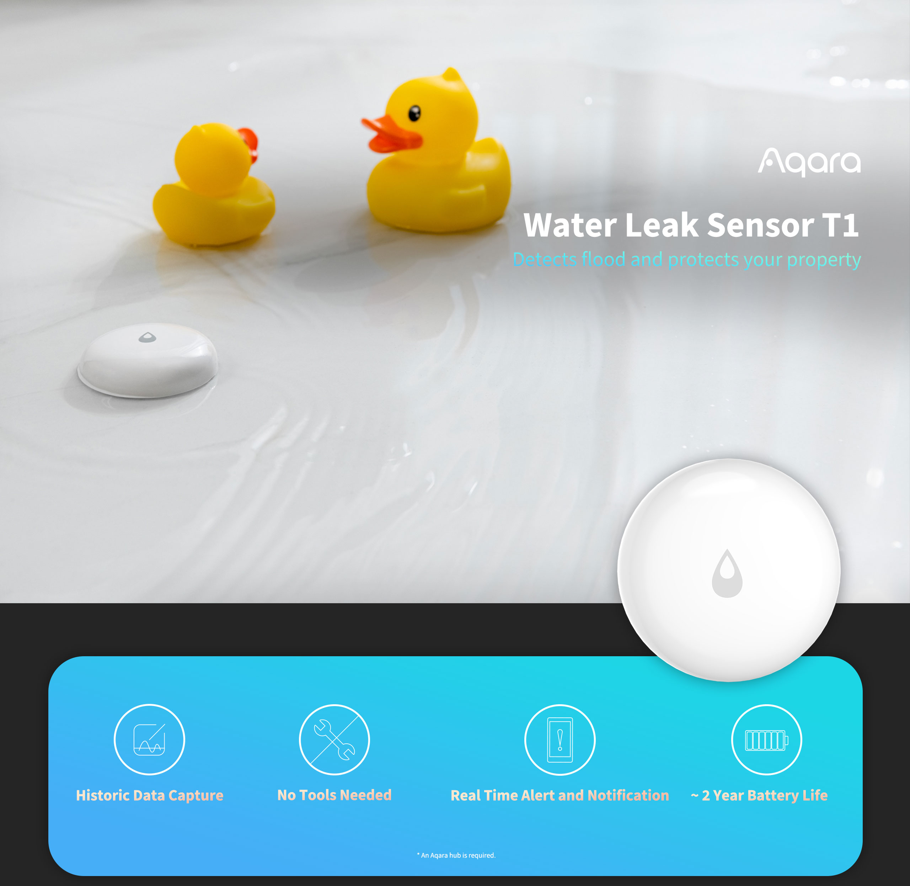
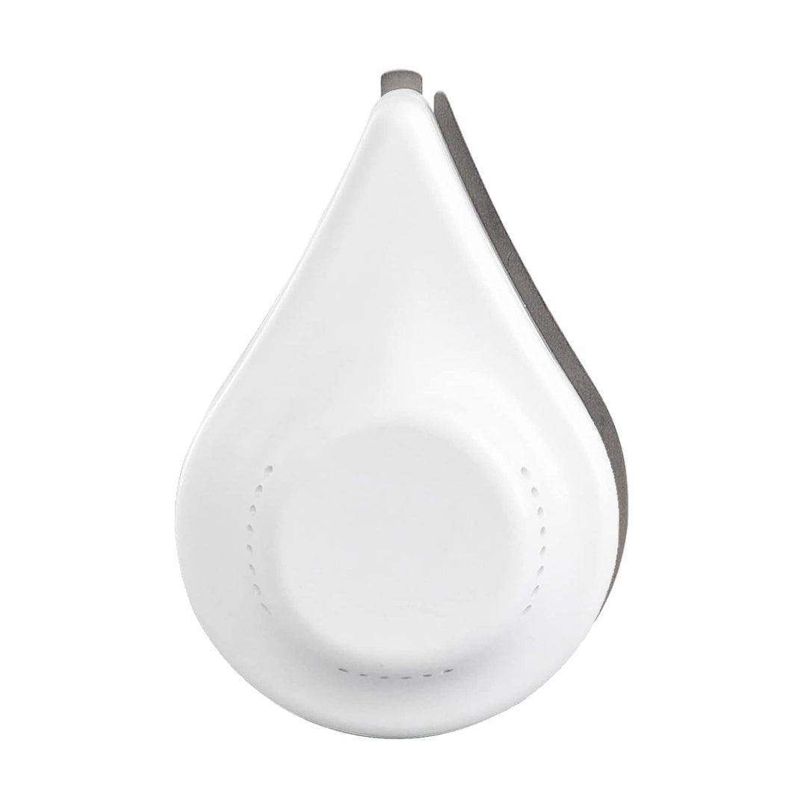
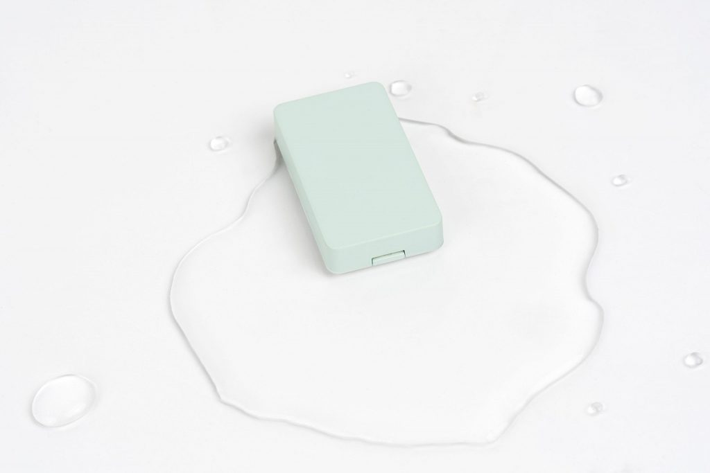

Guide · Sensors
The best water leak sensor for Home Assistant (2026)
A water leak sensor is the cheapest insurance in a smart home, and it's the one device where reaction time matters more than features: either Home Assistant knows the laundry feed is dripping, or it doesn't. If you already run Zigbee, the best water leak sensor for Home Assistant is the Aqara Water Leak Sensor T1 — small enough to slide under a dishwasher, and it pairs straight into ZHA with no Aqara hub. On Z-Wave, the Zooz ZSE42 is the equivalent pick. If you have no radio at all, the Shelly Flood runs on Wi-Fi and needs nothing in the middle.
The advice below follows the radio decision, not the brand. Pick the sensor that speaks a protocol your house already has, then spend the effort on placement and on making something close the valve.

The short list
| Sensor | Radio | How it lands in Home Assistant | Best for |
|---|---|---|---|
| Aqara Water Leak Sensor T1 | Zigbee | ZHA or Zigbee2MQTT, via your own coordinator | Smallest footprint, existing Zigbee mesh |
| ThirdReality Smart Water Leak Sensor | Zigbee | ZHA or Zigbee2MQTT | A local 120 dB alarm that works with the hub down |
| Zooz ZSE42 Water Leak XS | Z-Wave (800 series) | Z-Wave JS app plus the Z-Wave integration | An existing Z-Wave network and a valve on the same radio |
| Shelly Flood | Wi-Fi 2.4 GHz | Shelly integration or MQTT | No hub, and a Wi-Fi access point near the leak |
Zigbee pick: Aqara Water Leak Sensor T1
Aqara lists the T1 under Sensors on its global site alongside the Door and Window Sensor P2 and the Motion Sensor P1, which is the company telling you it's a mainstream part of the line rather than a one-off. It's a Zigbee device: the two probe contacts on the base bridge when water reaches them, and the sensor reports.
Two things are worth saying plainly. First, you don't need the Aqara hub. The Zigbee Home Automation integration talks directly to a USB or network coordinator and pairs devices itself, and Aqara's hub only matters if you want Aqara's app. Second, Aqara's product page renders its spec tab in the browser, so battery life and any IP rating are not in the page HTML. That's not a reason to avoid the sensor, but it is a reason to check the printed manual or the device page in ZHA or Zigbee2MQTT rather than trusting a review's number. Aqara Water Leak Sensor T1 on Amazon.
Zigbee alternative: ThirdReality Smart Water Leak Sensor
The ThirdReality sensor is also Zigbee, and it carries a 120 dB onboard alarm. That matters more than it sounds: if Home Assistant is restarting, or the coordinator is unplugged, the sensor still makes noise in the room where the water is. The vendor sells it direct in single and multi-pack variants, and confirms Zigbee rather than Wi-Fi. If you want a sensor that shouts before the automation even runs, this is the one. ThirdReality Water Leak Sensor on Amazon.

Z-Wave pick: Zooz ZSE42 Water Leak XS
Zooz's ZSE42 is the sensor you buy because your house already speaks Z-Wave. It runs on a single CR2032 coin cell, uses an 800-series chip, and is 0.3 inches thick — thin enough to sit under a fridge or a washing machine without lifting anything. Pairing is SmartStart: scan the QR code, enter the PIN, and the Z-Wave JS app adds it.
The range claim is the interesting one. Zooz says that with a hub supporting Z-Wave Long Range the signal can extend to 1300 feet. That's a marketing number measured in ideal conditions, not a promise about your basement, but on a large property it's the reason to prefer Z-Wave over a Wi-Fi sensor at the far end of a garden room. Zooz also registers the ZSE42 for a five-year warranty. See the Z-Wave hub guide if you're still choosing an adapter. Zooz ZSE42 on Amazon.

No-hub pick: Shelly Flood
The Shelly Flood is a Wi-Fi sensor — 802.11 b/g/n on 2.4 GHz — so there is no coordinator to buy and nothing to flash. It takes one CR123A 3 V lithium cell, which Shelly does not include and says must not be a rechargeable, and rates battery life at up to 18 months. It also reports temperature: operational range is -40 to +40 °C, with measurement from -40 to 60 °C at ±1 °C. The body is 70 mm by 19 mm.
On the software side it's unusually open for a consumer sensor: an embedded web server, plus MQTT, CoAP and REST. In Home Assistant that means the Shelly integration or MQTT, and either way you're not dependent on a vendor cloud. The tradeoff is honest and stated in the spec sheet: Wi-Fi means you need 2.4 GHz coverage where the leak would happen, and a battery Wi-Fi device that talks every so often will not last as long as a Zigbee sensor that whispers to a coordinator in the next room. Shelly Flood on Amazon.

How each one pairs with Home Assistant
The three radios mean three different setup paths, and knowing which one you're on saves an hour of confusion.
- Zigbee (Aqara, ThirdReality). The ZHA integration talks directly to a USB or network coordinator, with no vendor hub. The documentation covers adding devices, router devices, OTA firmware updates and a network-topology view. Choose your coordinator from the Zigbee hub guide.
- Z-Wave (Zooz). You need a Z-Wave adapter plus the Z-Wave JS app and server, then the Z-Wave integration adds devices. SmartStart inclusion is by QR code, and the integration exposes notification and event entities and supports firmware updates from the UI — see the Z-Wave JS documentation.
- Wi-Fi (Shelly). The Flood arrives through the Shelly integration or MQTT. No radio coordinator involved, and no cloud account required to keep it working locally.
Still weighing radios generally? Zigbee vs Z-Wave covers the mesh behaviour that decides which sensors report quickly in a real house.
Making the sensor close the valve
A notification at 3 a.m. is worth having. Water off is worth more. Both vendors in this roundup treat shut-off as the natural pairing rather than an add-on: Zooz explicitly positions the ZSE42 to work with a Z-Wave valve actuator such as its Titan, and Aqara sells the Valve Controller T1, a motorised ball-valve controller listed under its Controllers.
The automation itself is short. Trigger on the sensor's leak event, action on the valve entity, plus a notification so you know why the water stopped. Keeping sensor and actuator on the same radio keeps the whole chain local — no cloud round trip between the puddle and the valve. Aqara Valve Controller T1 on Amazon.
Setup, in order
- Decide the radio first: Zigbee if you run ZHA or Zigbee2MQTT, Z-Wave if you run Z-Wave JS, Wi-Fi if you run neither and have coverage.
- Plug a Zigbee coordinator on a USB extension cable, away from USB 3 ports, or attach a network coordinator by Ethernet. Home Assistant Green has no built-in Zigbee radio.
- For Z-Wave, attach the adapter, install the Z-Wave JS app, then add the integration and pair by QR code and PIN.
- Add the sensor in Home Assistant and give it a name that says where it is — "Kitchen sink" beats "Water leak sensor 2".
- Test it with a wet paper towel on the contacts rather than guessing. Note how long the notification takes.
- Only then add the valve automation, so you know the trigger works before it can shut your water off by mistake.
Gotchas worth knowing before you buy
None of these are submersible. Zooz states it outright: the ZSE42 is sealed but cannot be used in pools or aquariums, or submerged. Aqara and ThirdReality don't claim a submersion rating at all. A sump pit that fills is exactly the case where the sensor floats and stops reporting.
Battery figures are thinner than reviews suggest. Shelly publishes 18 months for the Flood and Zooz names the cell but not a runtime. Aqara and ThirdReality were not in the HTML of their product pages, which render specs client-side. Verify against the manual or the device page in ZHA or Zigbee2MQTT before you commit to a yearly swap.
Zigbee2MQTT's old Aqara slug is dead. There is no device page at the legacy Aqara leak-sensor URL, so don't follow a link from an old forum post — look the device up inside Zigbee2MQTT itself.
Battery sensors are listeners, not routers. They sleep between reports, so reaction time depends on the device's reporting behaviour, which none of these vendors publish on the pages above. Test the actual delay with water; don't assume the mesh makes it instant.
FAQ
What is the best water leak sensor for Home Assistant in 2026?
For a Zigbee network, the Aqara Water Leak Sensor T1 is the smallest and simplest choice and pairs straight to ZHA. On Z-Wave, the Zooz ZSE42 is the equivalent pick, and it is designed to pair with a Z-Wave valve actuator. With no radio at all, the Shelly Flood runs on Wi-Fi and needs no hub.
Do I need a hub for a Zigbee water leak sensor, or does ZHA pair it directly?
No vendor hub is needed. Zigbee sensors pair through the Zigbee Home Automation integration, which talks directly to a USB or network Zigbee coordinator. The Aqara hub is only required if you use Aqara's own app.
Zigbee or Z-Wave water leak sensor — which reaches further?
Both are mesh radios, so reach depends on the mains-powered devices already in your house. Zooz claims up to 1300 feet for the ZSE42 with a hub that supports Z-Wave Long Range. In a house that already has one radio, staying on it costs nothing and avoids a second network.
Will an Aqara leak sensor work in Home Assistant without the Aqara hub?
Yes, as a Zigbee sensor it joins ZHA or Zigbee2MQTT through your own coordinator. Aqara's T1 product page does not publish battery life or IP rating in its HTML, so confirm those on the printed manual or the device page in ZHA or Zigbee2MQTT.
How do I make a water leak sensor close a shut-off valve automatically?
Pair the sensor with a valve controller on the same radio and drive it from a Home Assistant automation. Aqara makes the Valve Controller T1, and Zooz positions the ZSE42 to work with a Z-Wave valve actuator such as its Titan. Detection and shut-off stay local, with no cloud round trip.
How long do water leak sensor batteries last?
Shelly rates the Flood at up to 18 months on one CR123A, which the vendor does not include and says must not be a rechargeable. The Zooz ZSE42 uses a single CR2032. Aqara and ThirdReality do not publish a battery figure on the pages we read, so check the manual before planning a replacement schedule.
Can a leak sensor sit in a sump pit or under a water heater where it might get submerged?
Not with these sensors. Zooz states plainly that the ZSE42 is sealed but not submersible and cannot be used in pools or aquariums, and the Aqara and ThirdReality pages do not claim submersion ratings at all. Put the sensor on the floor beside the hazard, not in standing water.
We publish a daily brief on Home Assistant, Zigbee, Z-Wave and Matter releases. Read today's.
- Primary sources
- Aqara Water Leak Sensor T1; Aqara Valve Controller T1; Zooz ZSE42 Water Leak XS; Shelly Flood; ThirdReality Smart Water Leak Sensor; Home Assistant ZHA integration; Home Assistant Z-Wave JS integration
As an Amazon Associate, HA News earns from qualifying purchases.